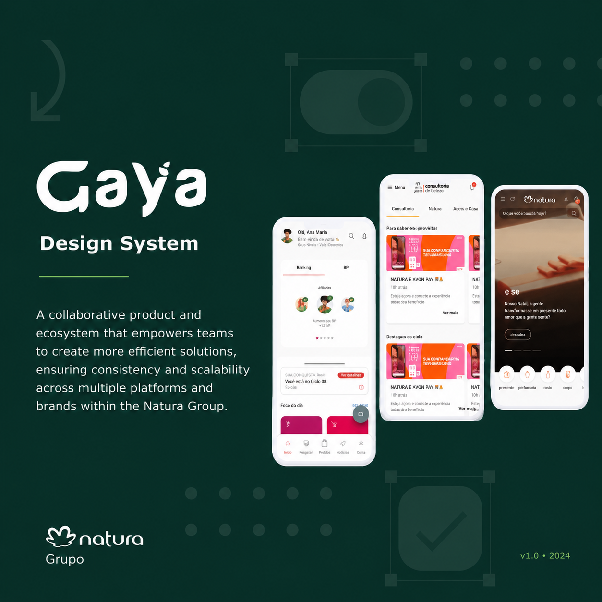
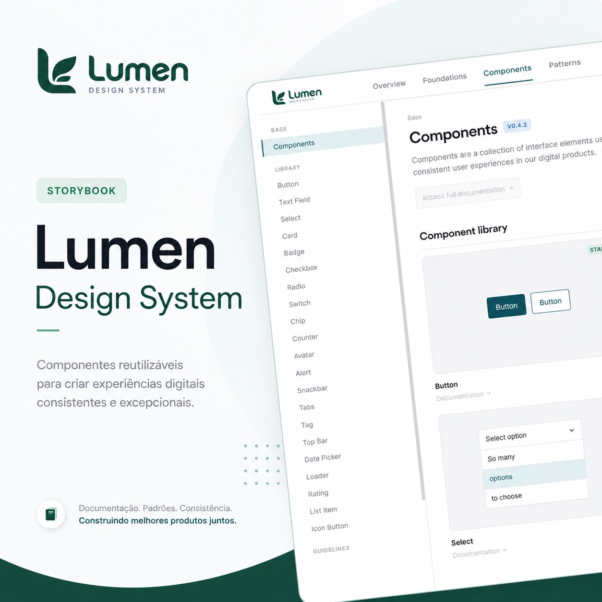
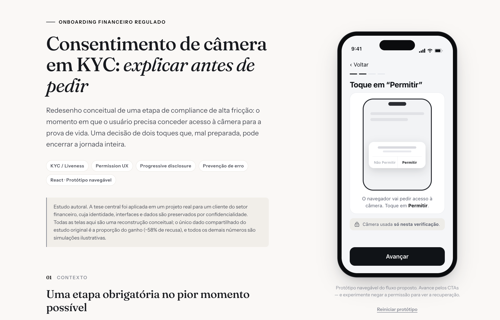
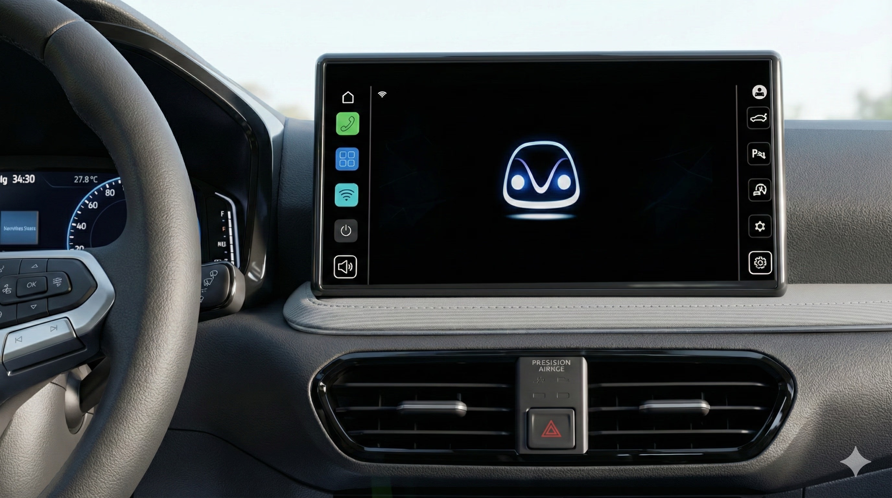
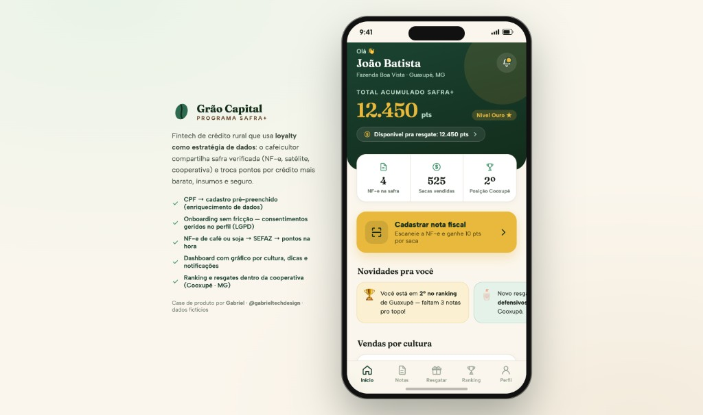

Product Design com IA
Pesquisa, fluxos, prototipação e validação end-to-end, incluindo fluxos de agente e copiloto, estados de confiança e recuperação de erro.
Product Designer Sênior especializado em IA aplicada ao produto e ao processo. Incorporo LLMs ao fluxo de design com resultado medido, 25% menos tempo de handoff em design system multimarca, e desenho produtos de IA: fluxos de agente, estados de confiança e recuperação de erro. Do outro lado, produto financeiro regulado: jornadas bancárias, onboarding e KYC. Prototipo em código e entrego POCs funcionais em horas.
Seis anos desenhando produto, nove em tecnologia.


Desenhar produto de IA não é usar IA para desenhar. É decidir como o modelo mostra confiança, o que ele se recusa a fazer, e onde a pessoa continua no controle.
IA no fluxo, com resultado. Na Natura &Co incorporei LLMs ao processo de design do GaYa, documentação de componentes, scaffolding de código e geração de ícones, e o tempo de handoff caiu 25%. Não é IA como enfeite de portfólio: é IA dentro de um design system multimarca em produção, com o número medido.
IA como matéria-prima do produto: fluxos de agente e copiloto, estados de incerteza e streaming, verificabilidade da resposta, recuperação de erro e os limites do que o sistema deve se recusar a fazer. Entregues como protótipos React funcionais, não como telas estáticas.
Produto financeiro regulado. No Bradesco e no Banco BRB, jornadas centrais de banco e seguros: abertura e ativação de conta, informe de rendimentos, verificação de identidade e prevenção a fraude, onde a exigência de compliance molda o fluxo, e não apenas o texto.
Design system em escala. Liderei o GaYa, sistema unificado de Natura, Avon e The Body Shop em Web, iOS e Android: mais de 200 componentes, arquitetura de tokens em três camadas, governança distribuída entre squads e cerca de US$ 2M em eficiência operacional.
Comecei em programação antes de aprender design visual, e trago essa disciplina para o produto, versionamento, testes, performance, sistemas que escalam. Prototipo em React e entrego POCs funcionais em horas, em vez de esperar uma sprint de engenharia para validar uma hipótese.
Cada disciplina abaixo é parte da mesma engrenagem: ideia → sistema → produto → resultado.
Pesquisa, fluxos, prototipação e validação end-to-end, incluindo fluxos de agente e copiloto, estados de confiança e recuperação de erro.
React, TypeScript e Storybook, POCs funcionais em horas.
LLMs no fluxo de design e dentro do produto, com resultado medido.
Token, componente, documentação e governança em escala corporativa.
Abertura de conta, ativação e verificação de identidade, onde o compliance molda o desenho, não só o texto.
Arquitetura de tokens em camadas e theming para múltiplas marcas.
Pesquisa qualitativa, jornada e métricas que prevêem comportamento real.
Padrões AA/AAA aplicados em componentes e fluxos em produção.
Roadmap, OKRs e priorização orientados por impacto, não por opinião.
Resultados medidos em produtos de Bradesco, Banco BRB e Natura &Co.

Co-construção de um design system multimarca para Natura, Avon e Casa &Co. Tokens, componentes, documentação, governança e acessibilidade aplicados em produtos de e-commerce e operação de consultoria. Incorporei LLMs ao processo de design, documentação de componentes, scaffolding de código e geração de ícones, e o tempo de handoff caiu 25%.

Design system autoral com arquitetura modular em Storybook, token-first, padrões de acessibilidade WCAG 2.2 e referência direta aos sistemas de design da Apple, IBM e Atlassian.

Redesenho conceitual de uma etapa de compliance de alta fricção: o momento em que o usuário concede acesso à câmera para a prova de vida. Dois toques que, mal preparados, podem encerrar a jornada e que, bem preparados, reduziram a recusa em ~58% em um projeto real.

Sistema de IA embarcado que monitora sinais de fadiga, stress e desatenção em tempo real, intervindo com microinterações de áudio e visuais para reduzir risco operacional em frotas. Conceito independente, sem vínculo com a Volkswagen.

App de fidelidade para uma fintech de crédito rural: o produtor cadastra suas notas fiscais de venda (café, soja) e acumula pontos que troca por taxa de crédito menor, defensivos e benefícios dentro da cooperativa. Onboarding sem fricção com enriquecimento cadastral via CPF, validação KYC simulada, carteira de pontos separada do status e ranking regional por cooperativa, protótipo navegável construído em React, testado com Playwright.
Trabalhei com o Gabriel no Bradesco, ele atuou como UI Designer, durante a fase de prototipação mostrou amplo conhecimento na área de design visual e no uso das ferramentas como Adobe XD. Além disso, é um profissional dedicado, atencioso aos detalhes e com excelentes insights no quesito visual, usabilidade e programação front-end.
Gabriel is a very studious and helpful design leader who is always updated with the latest trends and tools and ready to provide support to other designers and bring results to the business. A professional with a holistic Design System vision (from tokens to governance and practice), capable of connecting design and business, getting economy, avoiding remakes, and bringing ROI. He has natural leadership, conducts projects with autonomy, and manages stakeholders very well.
Trabalhar com o Gabriel foi uma experiência muito boa. Ele é um designer talentoso, domina o Figma e lidera com criatividade, sempre trazendo um olhar inovador com sua paixão por inteligência artificial. Tem boa habilidade em estruturar Design Systems claros e eficientes, além de ser estudioso, atualizado e sempre disposto a compartilhar conhecimento com o time.
Gabriel, thank you for seeing what no one wanted to acknowledge and still choosing to act. You didn't wait for authorization, nor hid behind your scope. You had the courage to do what was right, with strategic silence, technical foundation, and deep respect for brand identity.
Eu tive a oportunidade de trabalhar com Gabriel como um UI/UX Designer. Durante o tempo que trabalhamos juntos, ele foi capaz de criar designs que melhoraram a experiência do usuário e demonstrou ser uma pessoa dedicada e comprometida em sua função.
Histórico profissional detalhado, stack técnica, projetos e certificações em um único documento pronto para download.
Baixar currículo completoPDF · ~ atualizado mensalmente
Aberto para consultoria, projetos pontuais e oportunidades full-time onde design, engenharia e IA precisem caminhar lado a lado.